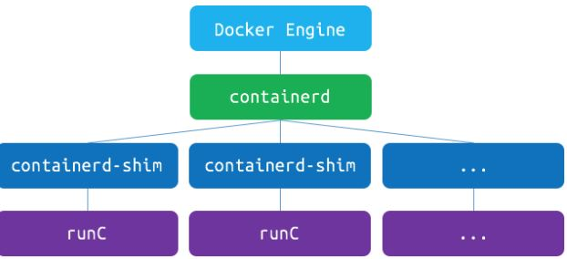

docker容器的隔离性
目录
1 Linux namespace
Linux 内核从版本 2.4.19 开始陆续引入了 namespace 的概念。 其目的是将某个特定的全局系统资源（global system resource）通过抽象方法使得 namespace 中的进程看起来拥有它们自己的隔离的全局系统资源实例 （The purpose of each namespace is to wrap a particular global system resource in an abstraction that makes it appear to the processes within the namespace that they have their own isolated instance of the global resource. ）。 Linux 内核中实现了六种 namespace。
| namespace | 引入的相关内核版本 | 被隔离的全局系统资源 | 在容器语境下的隔离效果 |
|---|---|---|---|
| Mount namespaces | Linux 2.4.19 | 文件系统挂接点 | 每个容器能看到不同的文件系统层次结构 |
| UTS namespaces | Linux 2.6.19 | nodename 和 domainname | 每个容器可以有自己的 hostname 和 domainame |
| IPC namespaces | Linux 2.6.19 | 特定的进程间通信资源，包括 System V IPC 和 POSIX message queues | 每个容器有其自己的 System V IPC 和 POSIX 消息队列文件系统，因此，只有在同一个 IPC namespace 的进程之间才能互相通信 |
| PID namespaces | Linux 2.6.24 | 进程 ID 数字空间 （process ID number space） | 每个 PID namespace 中的进程可以有其独立的 PID； 每个容器可以有其 PID 为 1 的 root 进程；也使得容器可以在不同的 host 之间迁移，因为 namespace 中的进程 ID 和 host 无关了。这也使得容器中的每个进程有两个 PID：容器中的 PID 和 host 上的 PID。 |
| Network namespaces | 始于 Linux 2.6.24 完成于 Linux 2.6.29 | 网络相关的系统资源 | 每个容器用有其独立的网络设备，IP 地址，IP 路由表，/proc/net 目录，端口号等等。这也使得一个 host 上多个容器内的同一个应用都绑定到各自容器的 80 端口上。 |
| User namespaces | 始于 Linux 2.6.23 完成于 Linux 3.8 | 用户和组 ID 空间 | 在 user namespace 中的进程的用户和组 ID 可以和在 host 上不同； 每个 container 可以有不同的 user 和 group id；一个 host 上的非特权用户可以成为 user namespace 中的特权用户； |
2 Docker 容器使用 linux namespace 做运行环境隔离
当 Docker 创建一个容器时，它会创建新的以上六种 namespace 的实例，然后把容器中的所有进程放到这些 namespace 之中，使得 Docker 容器中的进程只能看到隔离的系统资源。
2.1 containerd，containerd-shim 和 container 的关系

图1 containerd
- Docker 引擎管理着镜像，然后移交给 containerd 运行，containerd 再使用 runC 运行容器。
- Containerd 是一个简单的守护进程，它可以使用 runC 管理容器，使用 gRPC 暴露容器的其他功能。它管理容器的开始，停止，暂停和销毁。由于容器运行时是孤立的引擎，引擎最终能够启动和升级而无需重新启动容器。
- runC 是一个轻量级的工具，它是用来运行容器的，只用来做这一件事，并且这一件事要做好。runC 基本上是一个小命令行工具且它可以不用通过 Docker 引擎，直接就可以使用容器。
因此，容器中的主应用在 host 上的父进程是 containerd-shim，是它通过工具 runC 来启动这些进程的。
2.2 PID namespace
根据以上关系也能看出来，pid namespace 通过将 host 上 PID 映射为容器内的 PID， 使得容器内的进程看起来有个独立的 PID 空间。
2.3 user namespace
老版本中，Linux 内核里面只有一个数据结构负责处理用户和组。内核从 3.8 版本开始实现了 user namespace。 通过在 clone() 系统调用中使用 CLONE_NEWUSER 标志，一个单独的 user namespace 就会被创建出来。 在新的 user namespace 中，有一个虚拟的用户和用户组的集合。这些用户和用户组，从 uid/gid 0 开始，被映射到该 namespace 之外的 非 root 用户。
在现在的 linux 内核中，管理员可以创建成千上万的用户。这些用户可以被映射到每个 user namespace 中。 通过使用 user namespace 功能，不同的容器可以有完全不同的 uid 和 gid 数字。 容器 A 中的 User 500 可能被映射到容器外的 User 1500，而容器 B 中的 user 500 可能被映射到容器外的用户 2500。
为什么需要这么做呢？因为在容器中，提供 root 访问权限有其特殊用途。 想象一下，容器 A 中的 root 用户 （uid 0） 被映射到宿主机上的 uid 10000，容器 B 中的 root 被映射到 uid 20000。 类似网络端口映射，这允许管理员在容器中创建 root 用户，而不需要在宿主机上创建。
2.4 其他
其他的几个 namespace，比较简单。总之，Docker 守护进程为每个容器都创建了六种 namespace 的实例，使得容器中的进程都处于一种隔离的运行环境之中：
root@devstack:/proc/1726/ns# ls -l total 0 lrwxrwxrwx 1 231072 231072 0 Sep 18 01:45 ipc -> ipc:[4026532210] lrwxrwxrwx 1 231072 231072 0 Sep 18 01:45 mnt -> mnt:[4026532208] lrwxrwxrwx 1 231072 231072 0 Sep 18 01:44 net -> net:[4026532213] lrwxrwxrwx 1 231072 231072 0 Sep 18 01:45 pid -> pid:[4026532211] lrwxrwxrwx 1 231072 231072 0 Sep 18 01:45 user -> user:[4026532207] lrwxrwxrwx 1 231072 231072 0 Sep 18 01:45 uts -> uts:[4026532209]
3 Linux control groups
Linux Cgroup 可让为系统中所运行任务（进程）的用户定义组群分配资源 -–— 比如 CPU 时间、系统内存、网络带宽或者这些资源的组合。 您可以监控您配置的 cgroup，拒绝 cgroup 访问某些资源，甚至在运行的系统中动态配置您的 cgroup。 所以，可以将 controll groups 理解为 controller (system resource) (for) (process) groups，也就是是说它以一组进程为目标进行系统资源分配和控制。
它主要提供了如下功能：
- Resource limitation: 限制资源使用，比如内存使用上限以及文件系统的缓存限制。
- Prioritization: 优先级控制，比如：CPU 利用和磁盘 IO 吞吐。
- Accounting: 一些审计或一些统计，主要目的是为了计费。
- Control: 挂起进程，恢复执行进程。
使用 cgroup，系统管理员可更具体地控制对系统资源的分配、优先顺序、拒绝、管理和监控。 可更好地根据任务和用户分配硬件资源，提高总体效率。
在实践中，系统管理员一般会利用 CGroup 做下面这些事（有点像为某个虚拟机分配资源似的）：
- 隔离一个进程集合（比如：nginx 的所有进程），并限制他们所消费的资源，比如绑定 CPU 的核。
- 为这组进程分配其足够使用的内存
- 为这组进程分配相应的网络带宽和磁盘存储限制
- 限制访问某些设备（通过设置设备的白名单）
Linux 系统中，一切皆文件。Linux 也将 cgroups 实现成了文件系统，方便用户使用。
/sys/fs/cgroup 目录中有若干个子目录，我们可以认为这些都是受 cgroups 控制的资源以及这些资源的信息。
- blkio — 这个子系统为块设备设定输入/输出限制，比如物理设备（磁盘，固态硬盘，USB 等等）。
- cpu — 这个子系统使用调度程序提供对 CPU 的 cgroup 任务访问。
- cpuacct — 这个子系统自动生成 cgroup 中任务所使用的 CPU 报告。
- cpuset — 这个子系统为 cgroup 中的任务分配独立 CPU（在多核系统）和内存节点。
- devices — 这个子系统可允许或者拒绝 cgroup 中的任务访问设备。
- freezer — 这个子系统挂起或者恢复 cgroup 中的任务。
- memory — 这个子系统设定 cgroup 中任务使用的内存限制，并自动生成内存资源使用报告。
- net_cls — 这个子系统使用等级识别符（classid）标记网络数据包，可允许 Linux 流量控制程序（tc）识别从具体 cgroup 中生成的数据包。
- net_prio — 这个子系统用来设计网络流量的优先级
- hugetlb — 这个子系统主要针对于 HugeTLB 系统进行限制，这是一个大页文件系统。